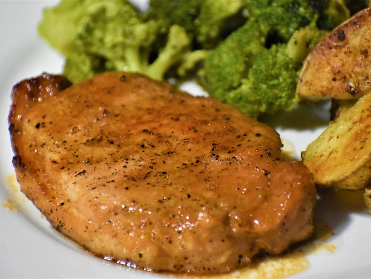

Honey Garlic Pork Chops Recipe

Description
Quick and easy pork chops with a simple glaze.
Ingredients
- 1/2 cup Ketchup
- 2 2/3 tablespoons honey
- 2 tablespoons soy sauce
- 2 cloves crushed garlic
- 6 pork chops, 4 ounce
Directions
- Preheat grill on medium heat and lightly oil.
- In a bowl, whisk Ketchup, honey, soy sauce, and garlic for glaze.
- Sear both sides of pork chops, lightly brush glaze on either side as they cook.
- Grill until no longer pink in center.